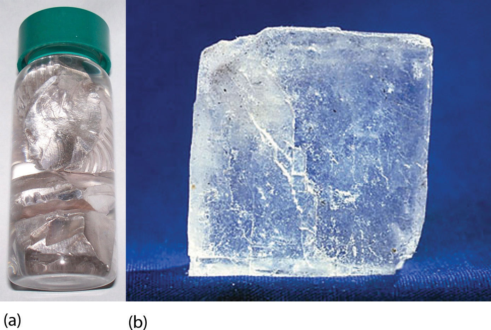
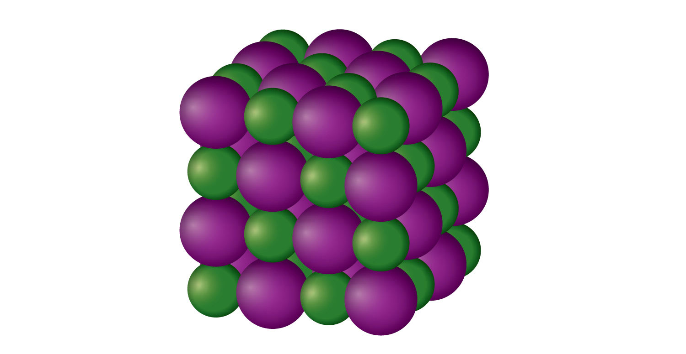
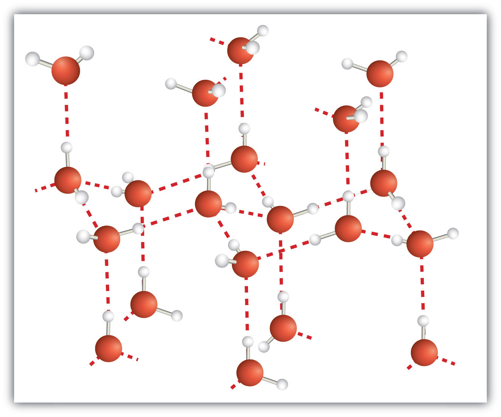
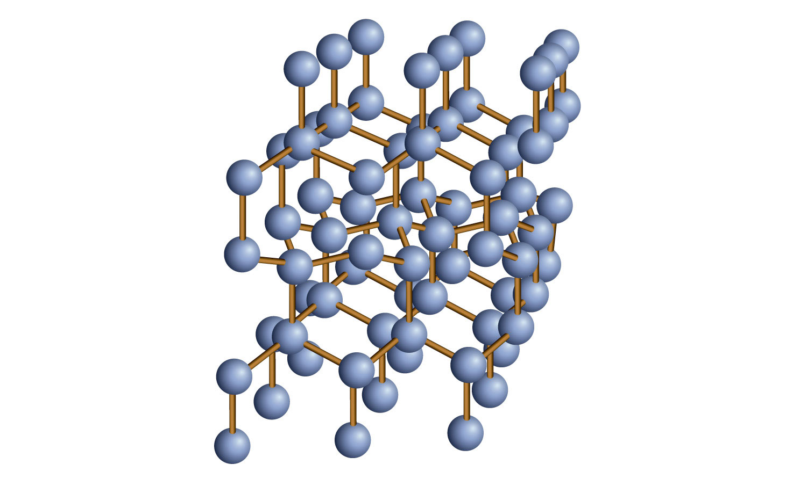

A solid is like a liquid in that particles are in contact with each other. Solids are unlike liquids in that the intermolecular forces are strong enough to hold the particles in place. At low enough temperatures, all substances are solids (helium is the lone exception), but the temperature at which the solid state becomes the stable phase varies widely among substances, from 20 K (−253°C) for hydrogen to over 3,900 K (3,600°C) for carbon.
The solid phase has several characteristics. First, solids maintain their shape. They do not fill their entire containers like gases do, and they do not adopt the shape of their containers like liquids do. They cannot be easily compressed like gases can, and they have relatively high densities.
Solids may also demonstrate a variety of properties. For example, many metals can be beaten into thin sheets or drawn into wires, while compounds such as NaCl will shatter if they are struck. Some metals, such as sodium and potassium, are rather soft, while others, such as diamond, are very hard and can easily scratch other substances. Appearances differ as well: most metals are shiny and silvery, but sulfur (a nonmetal) is yellow, and ionic compounds can take on a rainbow of colors. Solid metals conduct electricity and heat, while ionic solids do not. Many solids are opaque, but some are transparent. Some dissolve in water, but some do not. Figure 10.13 "Properties of Solids" shows two solids that exemplify the similar and dissimilar properties of solids.
Figure 10.13 Properties of Solids
(a) Sodium metal is silvery, soft, and opaque and conducts electricity and heat well. (b) NaCl is transparent, hard, and colorless and does not conduct electricity or heat well in the solid state. These two substances illustrate the range of properties that solids can have.
Source: Photo on left courtesy of Images of Elements, http://images-of-elements.com/sodium.php. Photo on right courtesy of Choba Poncho, http://commons.wikimedia.org/wiki/File:Sodiumchloride_crystal_01.jpg.
Solids can have a wide variety of physical properties because there are different types of solids. Here we will review the different types of solids and the bonding that gives them their properties.
First, we must distinguish between two general types of solids. An amorphous solidA solid with no long-term structure or repetition. is a solid with no long-term structure or repetition. Examples include glass and many plastics, both of which are composed of long chains of molecules with no order from one molecule to the next. A crystalline solidA solid with a regular, repeating three-dimensional structure. is a solid that has a regular, repeating three-dimensional structure. A crystal of NaCl (see Figure 10.13 "Properties of Solids") is one example: at the atomic level, NaCl is composed of a regular three-dimensional array of Na+ ions and Cl− ions.
There is only one type of amorphous solid. However, there are several different types of crystalline solids, depending on the identity of the units that compose the crystal.
An ionic solidA crystalline solid composed of ions. is a crystalline solid composed of ions (even if the ions are polyatomic). NaCl is an example of an ionic solid (Figure 10.14 "An Ionic Solid"). The Na+ ions and Cl− ions alternate in three dimensions, repeating a pattern that goes on throughout the sample. The ions are held together by the attraction of opposite charges—a very strong force. Hence most ionic solids have relatively high melting points; for example, the melting point of NaCl is 801°C. Ionic solids are typically very brittle. To break them, the very strong ionic attractions need to be broken; a displacement of only about 1 × 10−10 m will move ions next to ions of the same charge, which results in repulsion. Ionic solids do not conduct electricity in their solid state; however, in the liquid state and when dissolved in some solvent, they do conduct electricity. This fact originally promoted the idea that some substances exist as ionic particles.
Figure 10.14 An Ionic Solid
NaCl is a solid composed of a three-dimensional array of alternating Na+ ions (green) and Cl− ions (purple) held together by the attraction of opposite charges.
A molecular solidA crystalline solid whose components are covalently bonded molecules. is a crystalline solid whose components are covalently bonded molecules. Many molecular substances, especially when carefully solidified from the liquid state, form solids where the molecules line up with a regular fashion similar to an ionic crystal, but they are composed of molecules instead of ions. Because the intermolecular forces between molecules are typically less strong than in ionic solids, molecular solids typically melt at lower temperatures and are softer than ionic solids. Ice is an example of a molecular solid. In the solid state, the molecules line up in a regular pattern (Figure 10.15 "Molecular Solids"). Some very large molecules, such as biological molecules, will form crystals only if they are very carefully solidified from the liquid state or, more usually, from a dissolved state; otherwise, they will form amorphous solids.
Figure 10.15 Molecular Solids
Water molecules line up in a regular pattern to form molecular solids. The dotted lines show how the polar O–H covalent bonds in one molecule engage in hydrogen bonding with other molecules. The O atoms are red, and the H atoms are white.
Some solids are composed of atoms of one or more elements that are covalently bonded together in a seemingly never-ending fashion. Such solids are called covalent network solidsA crystalline solid composed of atoms of one or more elements that are covalently bonded together in a seemingly never-ending fashion.. Each piece of the substance is essentially one huge molecule, as the covalent bonding in the crystal extends throughout the entire crystal. The two most commonly known covalent network solids are carbon in its diamond form and silicon dioxide (SiO2). Figure 10.16 "Covalent Network Solids" shows the bonding in a covalent network solid. Generally, covalent network solids are poor conductors of electricity, although their ability to conduct heat is variable: diamond is one of the most thermally conductive substances known, while SiO2 is about 100 times less thermally conductive. Most covalent network solids are very hard, as exemplified by diamond, which is the hardest known substance. Covalent network solids have high melting points by virtue of their network of covalent bonds, all of which would have to be broken for them to transform into a liquid. Indeed, covalent network solids are among the highest-melting substances known: the melting point of diamond is over 3,500°C, while the melting point of SiO2 is around 1,650°C. These characteristics are explained by the network of covalent bonds throughout the sample.
Figure 10.16 Covalent Network Solids
Diamond is a covalent network solid, with each C atom making four covalent bonds to four other C atoms. A diamond is essentially one huge molecule.
A metallic solidA solid with the characteristic properties of a metal. is a solid with the characteristic properties of a metal: shiny and silvery in color and a good conductor of heat and electricity. A metallic solid can also be hammered into sheets and pulled into wires. A metallic solid exhibits metallic bonding, a type of intermolecular interaction caused by the sharing of the s valence electrons by all atoms in the sample. It is the sharing of these valence electrons that explains the ability of metals to conduct electricity and heat well. It is also relatively easy for metals to lose these valence electrons, which explains why metallic elements usually form cations when they make compounds.
Predict the type of crystal exhibited by each solid.
Solution
Test Yourself
Predict the type of crystal exhibited by each solid.
Answers
The foods and beverages we eat and drink all have different phases: solid, liquid, and gas. (How do we ingest gases? Carbonated beverages have gas, which sometimes cause a person to belch.) However, among the solids we eat, three in particular are, or are produced from, rocks. Yes, rocks!
The first one is NaCl, or common salt. Salt is the only solid that we ingest that is actually mined as a rock (hence the term rock salt; it really is a rock). Salt provides both Na+ ions and Cl− ions, both of which are necessary for good health. Salt preserves food, a function that was much more important before the days of modern food preparation and storage. The fact that saltiness is one of the major tastes the tongue can detect suggests a strong evolutionary link between ingesting salt and survival. There is some concern today that there is too much salt in the diet; it is estimated that the average person consumes at least three times as much salt daily than is necessary for proper bodily function.
The other two rocks we eat are related: sodium bicarbonate (NaHCO3) and sodium carbonate (Na2CO3). However, we do not mine these substances directly from the ground; we mine trona, whose chemical formula is Na3H(CO3)2. This substance is dissolved in water and treated with CO2 gas to make either Na2CO3 or NaHCO3. Another process, called the Solvay process, is also used to make Na2CO3. In the Solvay process, NH3 and CO2 are added to solutions of NaCl to make NaHCO3 and NH4Cl; the NaHCO3 precipitates and is heated to produce Na2CO3. Either way, we get these two products from the ground (i.e., rocks).
NaHCO3 is also known as baking soda, which is used in many baked goods. Na2CO3 is used in foods to regulate the acid balance. It is also used in laundry (where it is called washing soda) to interact with other ions in water that tend to reduce detergent efficiency.
What is the difference between a crystalline solid and an amorphous solid?
What two properties do solids have in common? What two properties of solids can vary?
Explain how the bonding in an ionic solid explains some of the properties of these solids.
Explain how the bonding in a molecular solid explains some of the properties of these solids.
Explain how the bonding in a covalent network solid explains some of the properties of these solids.
Explain how the bonding in a metallic solid explains some of the properties of these solids.
Which type(s) of solid has/have high melting points?
Which type(s) of solid conduct(s) electricity in their solid state? In their liquid state?
Which type of solid(s) is/are considered relatively soft?
Which type of solid(s) is/are considered very hard?
Predict the type of solid exhibited by each substance.
Predict the type of solid exhibited by each substance.
Predict the type of solid exhibited by each substance.
Predict the type of solid exhibited by each substance.
Predict the type of solid exhibited by each substance.
Predict the type of solid exhibited by each substance.
At the atomic level, a crystalline solid has a regular arrangement of atoms, whereas an amorphous solid has a random arrangement of atoms.
The oppositely charged ions are very strongly held together, so ionic crystals have high melting points. Ionic crystals are also brittle because any distortion of the crystal moves same-charged ions closer to each other, so they repel.
The covalent network solid is essentially one molecule, making it very hard and giving it a very high melting point.
ionic solids, covalent network solids
molecular solids